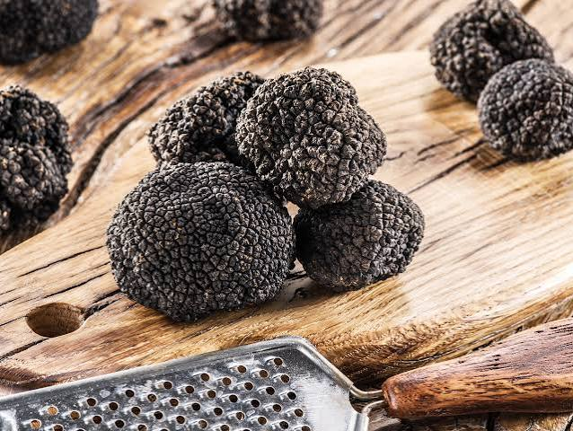

Truffe Noire
du Périgord


⟹ Produits Emblématiques ⟸
Surnommée le « diamant noir », la truffe noire du Périgord — Tuber melanosporum — est le plus prestigieux des champignons de la gastronomie française. Ce champignon souterrain vit en symbiose avec les racines d'un arbre hôte, le plus souvent un chêne ou un noisetier, et ne se récolte que de la mi-novembre à mars, lors du « cavage », traditionnellement mené à l'aide d'un chien truffier dressé pour repérer son parfum puissant.

Consommée dès l'Antiquité par les Grecs et les Romains, qui lui prêtaient des vertus quasi magiques, la truffe disparaît des tables au Moyen Âge avant de renaître à la Renaissance. C'est surtout à partir du XVIIe siècle que le Périgord expédie vers Paris volailles truffées et truffes fraîches, et que les gourmets de la cour, de François Ier à Louis XV, s'accordent à juger les truffes périgourdines supérieures à toutes les autres.
Le nom « truffe du Périgord » s'impose surtout à la fin du XIXe siècle, popularisé par les conserveurs du Lot pour valoriser commercialement leurs productions. Aujourd'hui, l'appellation désigne avant tout une espèce botanique plus qu'une origine géographique stricte, mais le Périgord reste l'un des grands terroirs historiques de sa production, aux côtés du Vaucluse et du Tricastin.
Depuis 2007, une AOC « Noix du Périgord »... pardon, « Truffe Noire du Périgord » protège les truffes récoltées dans cette aire, tandis que le décret national impose que le nom « truffe du Périgord » ne puisse désigner que du véritable Tuber melanosporum. La rareté du produit — la récolte française est passée de plusieurs milliers de tonnes au XIXe siècle à quelques dizaines de tonnes aujourd'hui — explique son prix élevé et son statut de mets d'exception, réservé aux grandes occasions.
Tuber aestivum, la truffe d'été : récoltée de mai à août, à la chair claire et au parfum plus délicat de noisette et de sous-bois frais.
Tuber brumale, la truffe brumale : voisine de la melanosporum, elle pousse dans les mêmes sols calcaires de décembre à mars, avec un parfum plus musqué et rustique.
La truffe blanchie ou en conserve : pour prolonger la saison, certaines maisons périgourdines proposent des truffes en bocal, cuites dans leur jus, moins puissantes que la truffe fraîche mais precieuses en cuisine toute l'année.
La truffe se déguste et s'achète avant tout sur les marchés au cadran du Périgord, où les transactions se font encore souvent de la main à la main.
Marché aux truffes de Sarlat-la-Canéda, l'un des plus réputés de la région, ouvert le samedi matin en saison.
Marché de Sainte-Alvère, haut lieu historique du commerce truffier en Périgord Noir.
Marché de Périgueux, où se tient également un marché au gras et à la truffe pendant l'hiver.
Fermes truffières et visites de cavage, proposées par de nombreux trufficulteurs du département, pour découvrir la recherche du « diamant noir » aux côtés d'un chien truffier.